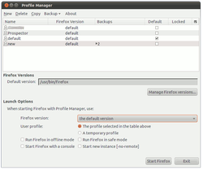
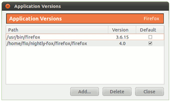
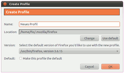
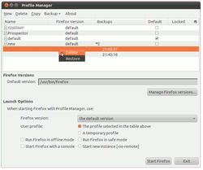
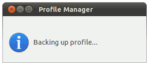
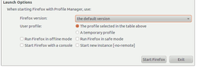
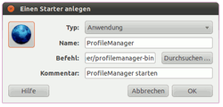

Mozilla Profilmanager
Achtung!
Da von Firefox alle sechs Wochen eine neue Version erscheint, kann dieser Artikel leider nicht – wie sonst in diesem Wiki üblich – mit einer bestimmten Ubuntu-Version getestet werden. Die Mozilla-Entwickler behalten sich vor, jederzeit neue Funktionen hinzuzufügen oder vorhandene wieder aus dem Programm zu entfernen. Unter solchen Umständen ist es nicht möglich, die Korrektheit der in diesem Artikel beschriebenen Informationen dauerhaft für eine Ubuntu-Version zu garantieren.
Zum Verständnis dieses Artikels sind folgende Seiten hilfreich:
ProfileManager ist ein Programm aus dem Hause Mozilla, welches Stand-Alone eingesetzt werden kann (also ohne Installation auskommt) und eine einfachere Handhabung von Mozilla-Profilen ermöglicht. Damit können grundsätzlich die Profile aller Produkte Mozillas verwaltet werden – der Browser Firefox ebenso wie der E-Mail-Client Thunderbird oder die Internet-Software-Suite SeaMonkey. Einzige Einschränkung ist, dass die Programme auf der Laufzeitumgebung von XULRunner basieren.
Der ProfileManager gleicht in den Grundzügen dem bekannten Profilmanager, der bis einschließlich Firefox 4.0 implementiert ist. Er läuft sowohl mit früheren Firefox-Versionen als auch früheren anderen Mozilla Produkten wie Thunderbird oder SeaMonkey.
Hinweis:
Ab Firefox 5.0 ist seitens Mozilla geplant, den implementierten Profilmanager zu entfernen und nur noch den Stand-Alone-ProfileManager einzusetzen (siehe Remove Profile Manager UI  ). Andere Profile können dann nur noch direkt aufgerufen werden, die dazugehörige GUI wird entfernt.
). Andere Profile können dann nur noch direkt aufgerufen werden, die dazugehörige GUI wird entfernt.
Diese Planung wurde nie endgültig gegen Nutzerinteressen-/-wünsche umgesetzt und der Profilemanager ist in Firefox 26 immernoch vorhanden.
Funktionen¶
 Einige der neuen und verbesserten Funktionen des ProfileManagers sollen in der folgenden Liste benannt werden:
einfaches Backup der Profile
einfaches Wiederherstellen der Profile
Sichern und Wiederherstellen in komprimierte Archive (ZIP)
Verwalten von multiplen Programmversionen (Firefox, Thunderbird)
Verknüpfen von Profilen zu bestimmten Programmversionen
Starten aller Profile mit allen verfügbaren jeweiligen Programmversionen
Download¶
Von der Mozilla-Seite lädt man sich die gewünschte Version im Format tar.gz herunter, um den Ordner profilemanager zu erhalten. Wichtig ist hierbei, dass es sich um die Linuxversion des ProfileManagers handelt (profilemanager.linux.tar.gz).
Hinweis!
Fremdsoftware kann das System gefährden.
Anmerkung: Den ProfileManager lädt man sich bei ftp.mozilla.org  herunter.
herunter.
Hinweis:
Es wird in diesem Artikel vorausgesetzt, dass man sich im Homeverzeichnis befindet und dort einen neuen Ordner anlegt (profilemanager), der dann für den ProfileManager benutzt wird. Natürlich muss der Ordner nicht im Homeverzeichnis liegen oder wie vorgeschlagen heißen; dann jedoch muss dies vom Anwender angepasst werden.
Entpacken¶
Man entpackt nun die heruntergeladene Datei [1] . Dies kann entweder grafisch über die GUI oder über das Terminal [2] gemacht werden.
Achtung!
Man sollte sich spätestens an dieser Stelle davon überzeugen, dass man von seinem Firefox-Profilordner eine Sicherungskopie (Backup) gemacht hat.
ProfileManager starten¶
Nachdem die Datei entpackt wurden, kann man den ProfileManager auch schon benutzen. Dazu kann man einerseits das Terminal nutzen [2] oder sich einen Starter anlegen (siehe Abschnitt Starter anlegen).
Um den ProfileManager zu starten, wechselt man in den beinhaltenden Ordner und gibt folgenden Befehl ins Terminal ein:
./profilemanager-bin
Dieser Befehl startet den ProfileManager automatisch für die eigenen Firefox-Profile.
Andere Programme starten¶
Möchte man hingegen ein anderes Profil eines Mozilla-Programms damit verwalten, so hängt man den Namen des Programmes als Argument hinter den eigentlichen Befehl. Für den Aufruf des ProfileManagers in Verbindung mit Thunderbird sähe der Befehl wie folgt aus:
./profilemanager-bin thunderbird
ProfileManager nutzen¶
Hinweis:
In diesem Artikel wird nur das Vorgehen in Bezug auf den Browser Firefox beschrieben. Die Funktionsweise für andere Mozilla-Programme (Thunderbird, SeaMonkey) ist jedoch die gleiche.
 ProfileManager legt beim Start automatisch eine Liste der auf dem System verfügbaren Programmversionen sowie eine Liste der Profile an. Natürlich kann man auch manuell Prorammversionen hinzufügen. Dies geschieht über die Schaltfläche "Manage Firefox versions" (siehe Bild rechts). Jede Firefox-Version in dieser Liste hat die gleichen Angaben: Den Pfad, die Version und die Default-Schaltfläche. Diese zeigt an, dass diese Firefox-Version mit Profilen gestartet wird, die nicht mit einer spezifischen Applikation verknüpft sind.
Zwei Listen werden vom ProfileManager verwaltet:
Die Liste der Profile
Die Liste der Programmversionen, die mit den Profilen genutzt werden können
Jedes Profil kann dabei mit allen jeweiligen Programmversionen verknüpft und gestartet werden. So kann Profil A mit Firefox 3.6 gestartet werden, während Profil B mit Firefox 4.0 gestartet wird. Beim nächsten Start kann man dieses Vorgehen tauschen und Profil A mit Firefox 4.0 oder Profil B mit Firefox 3.6 starten.
Neues Profil erstellen¶
 Um ein neues Profil zu erstellen, klickt man in der Menüleiste auf "New". Ein Fenster öffnet sich, in welchem man den Namen des Profils und optional den Pfad des neuen Profils sowie die Firefox-Version angeben kann, die dann mit diesem Profil gestartet werden soll.
Firefox mit vorhandenem Profil starten¶
Um Firefox mit einem bestimmten Profil zu starten, wählt man das Profil im Hauptfenster des ProfileManagers aus und klickt auf die Schaltfläche "Start Firefox". Firefox wird mit diesem Profil gestartet und das ProfileManager-Fenster schließt sich. Die Firefox-Version, welche gestartet werden wird, wird in dem Auswahlmenü "Firefox Versions" angezeigt.
Gesperrte Profile¶
Profile können als gesperrt ("locked") im Hauptfenster angezeigt werden. Das bedeutet, dass diese Profile gerade von einer Firefox-Instanz benutzt werden. Falls man ein gesperrtes Profil starten möchte, erhält man eine Warnung. Fährt man trotz der Warnung fort, kann man Fehler erhalten oder – im schlimmsten Falle – das Profil zerstören, weshalb dringend geraten wird, gesperrte Profile nicht zu starten, sondern die damit verknüpfte Firefox-Instanz zu schließen.
Backups der Profile¶
ProfileManager bietet zwei verschiedene Mechanismen an, um Sicherheitskopien (Backups) der Profile zu erstellen:
Einen lokalen Backup-Ordner des ProfileManagers, wo Profile verwaltet werden (dies ist der einfache und empfohlene Weg)
Einen zu bestimmenden Backup-Ordner, in den Zip-Archive hinterlegt werden
Backups erstellen¶
 Um ein Backup anzulegen, wählt man das zu sichernde Profil aus und klickt in der Menüleiste auf "Backup -> Backup to -> Backup Folder". Das Profil wird daraufhin gesichert und das Backup erscheint in der Backup-Spalte im Hauptfenster des ProfileManagers.
Möchte man ein Backup löschen, so wählt man dieses im Hauptfenster des ProfileManagers aus, rechtsklickt darauf und löscht es (siehe Bild rechts).
Backups wiederherstellen¶
Um ein Profil wiederherzustellen, klickt man in der Menüleiste auf "Backup -> Restore from -> Backup Folder". Stellt man ein Profil wieder her, so verbleibt die Sicherheitskopie im entsprechenden Ordner, um sie später erneut verwenden zu können.
Backups als Zip-Archiv¶
 ProfileManager bietet das Sichern und Wiederherstellen in komprimierte Archive im Zip-Format an. Diese werden allerdings nicht im Hauptfenster in der Spalte "Backups" angezeigt. Die Möglichkeit Zip-Archive zu nutzen, vereinfacht den Austausch selbiger über verschiedene Computer hinweg.
Um ein Backup in einem Archiv zu sichern, wählt man das Profil aus, welches man sichern möchte, klickt in der Menüleiste auf "Backup -> Backup to -> Archive", vergibt einen Namen und wählt einen Ort für das Archiv aus.
Um ein gesichertes Archiv wiederherstellen zu können, wählt man in der Menüleiste "Backup -> Restore from -> Archive". Man wird nach dem Ort und dem Namen des zuvor gesicherten Archives gefragt und wählt dieses aus.
Weitere Optionen¶
 Im unteren Bereich des ProfileManagers finden sich weitere Optionen, die man nutzen kann. So kann man damit...
ein temporäres Profil auswählen, welches nach der Nutzung gelöscht wird
Firefox in einem Offline-Modus starten (Browser ist offline)
Firefox in einem Safe-Modus starten (Browser startet mit der Option, die Erweiterungen auszuschalten)
Firefox mit einer Fehler-Konsole starten zu lassen (mit Hilfe derer man Fehler identifizieren kann)
Firefox in einer parallelen, zweiten Instanz (-no-remote) zu starten (neben einem schon laufenden Firefox)
Einschränkungen¶
Man sollte sich darüber im Klaren sein, dass der oben beschriebene Weg einen voll funktionstüchtigen ProfileManager „installiert“, dieser aber in einigen Punkten grundlegend von systemeigenen Programmen abweicht.
Updates¶
Der ProfileManager lässt sich wie ein „normales“ Programm einsetzen und handhaben. Beachten muss man allerdings, dass er nicht wie die systemeigenen Programme über die Paketquellen mit Updates versorgt wird.
Einbindung ins Menü¶
Da der neue Browser nicht installiert, sondern nur aufgerufen wird, ist dieser nicht im Menü zu finden. Wer ihn zum Menü hinzufügen will, sollte den Abschnitt Starter anlegen befolgen.
Hinweis:
Die nachfolgenden Informationen sind optional umsetzbar. Mit dem bis hierhin vollzogenen Weg erhält man einen funktionstüchtigen ProfileManager, den man universell einsetzen kann.
Optionales¶
Anwender können sich den ProfileManager „stationär“ (= komfortablere Handhabung) einrichten.
Starter anlegen¶
Es gibt mehrere Möglichkeiten, um ein Programm zu starten: entweder über den direkten Aufruf eines Programms oder über eine Verknüpfung mit Hilfe des Befehls ln. Meist wird ein Programmstarter [4] verwenden, über den man beide Möglichkeiten umsetzen kann.
Einfacher Starter¶
 Möchte man sich einen Programmstarter z.B. auf dem Desktop anlegen, so kann man folgenden Befehl (Typ: Anwendung) nutzen, welcher im Vergleich zum obigen Befehl leicht modifiziert wurde:
/Ordner_des_Profilemanagers/profilemanager-bin
Alternativ kann man sich ein Skript erstellen, dass den ProfileManager aufruft. Dazu legt man sich ein neues Skript (verknüpft beispielsweise auf dem Desktop) mit dem Namen profilemanager.sh an, welches folgenden Inhalt hat:
1 2 3 | #!/bin/sh cd ~/profilemanager ./profilemanager-bin |
Starter (Verlinkung)¶
Möchte man den Vorteil des systemweiten Aufrufes nutzen, nutzt man eine symbolische Verknüpfung (ln), um das Starter-Skript profilemanager.sh mit dem Befehl pm-starter im Verzeichnis /usr/local/bin zu verlinken:
sudo ln -s ~/profilemanager/profilemanager-bin /usr/local/bin/pm-starter
Durch die Verlinkung nach /usr/local/bin lässt sich der ProfileManager aus jedem Pfad des Systems per pm-starter aufrufen.
Logo vergeben¶
Im nächsten Schritt kann man das rechts gezeigte Logo nutzen und verwenden. Es zeigt eine stilisierte Weltkugel. Die Icons stehen im Order profilemanager/chrome/icons/default zur Nutzung bereit.

- Erstellt mit Inyoka
-
 2004 – 2017 ubuntuusers.de • Einige Rechte vorbehalten
2004 – 2017 ubuntuusers.de • Einige Rechte vorbehalten
Lizenz • Kontakt • Datenschutz • Impressum • Serverstatus -
Serverhousing gespendet von